For most of this quarter, we’ve conceptualized connectivity and dependence from a purely spatial perspective. In this lab, we will examine how neighborhood linkages can be shaped by networks that transcend geographic connectivity. The objectives of this guide are as follows
To help us accomplish these learning objectives, we will use the same data from Labs 6 and 7 - socioeconomic characteristics and violent crime rates for census tracts in the wonderful city of Seattle, WA. We’ll construct a social network linking census tracts based on gang turfs.
We’ll be using the following new packages in this lab
install.packages("tidygraph")
install.packages("ggraph")
install.packages("igraph")
install.packages("visNetwork")Load in the following packages, all of which we’ve covered in previous labs
library(tidyverse)
library(sf)
library(sp)
library(tmap)
library(spdep)
We will be using the shapefile seattle_census_tracts_2010.shp. This file contains violent crime counts and rates between 2014 and 2017 by census tract. It also contains demographic and socioeconomic data from the 2012-16 American Community Survey. The record layout for the shapefile’s attribute table is located here.
I zipped up the files associated with the shapefile onto Github. Download the file, unzip it, and bring it into R using the following code.
setwd("insert your pathway here")
download.file(url = "https://raw.githubusercontent.com/crd230/data/master/seattle_census_tracts_2010.zip", destfile = "seattle_census_tracts_2010.zip")
unzip(zipfile = "seattle_census_tracts_2010.zip")
sea.tracts <- st_read("seattle_census_tracts_2010.shp", stringsAsFactors = FALSE)
sea.tracts.df <- sea.tracts
st_geometry(sea.tracts.df) <- NULLYou’ll notice that I used the argument stringsAsFactors = FALSE in st_read(). The default is TRUE, which means that variables that are detected as strings (characters) are turned into factors. This is no good because we’ll need to merge in network data into sea.tracts using the variable TRACTCE10, which needs to be either a character or numeric.
We’re going to examine the association between structural neighborhood characteristics and violent crime rates in the City of Seattle. Like we did in Labs 6 and 7, create the concentrated disadvantage and immigrant concentration indices. We’ll also need to convert our sf object to sp for our regression models.
sea.tracts.std <-sea.tracts.df %>%
select(GEOID10, ppov, unemp, pnhblack, pund18, pwelfare, pfb, phisp) %>%
gather(variable, value, -c(GEOID10)) %>%
group_by(variable) %>%
mutate(mean = mean(value), sd = sd(value), z = (value-mean)/sd) %>%
select(-(c(value, mean, sd))) %>%
spread(variable, z) %>%
mutate(concd = (ppov+unemp+pnhblack+pund18+pwelfare)/5, immc = (pfb+phisp)/2) %>%
select(GEOID10, concd, immc)
sea.tracts <- left_join(sea.tracts, sea.tracts.std, by = "GEOID10")
#create sp version
sea.tracts.sp <- as(sea.tracts, "Spatial")
There are numerous network analysis packages in R. We’ll be using the packages igraph, perhaps the most relied upon social network package in R (that or the suite of statnet packages) and tidygraph and ggraph, which leverage the power of igraph in a manner consistent with the tidyverse workflow. Here is a vignette of tidygraph. Here is the igraph website and lecture slides providing a brief background on the package. Finally, find ggraph vignettes from its creator here, here, and here. Let’s load these packages into your current R session
library(tidygraph)
library(ggraph)
library(igraph)The two primary aspects of networks are a multitude of separate entities and the connections between them. The vocabulary can be a bit technical and even inconsistent between different disciplines, packages, and software. The entities are referred to as nodes or actors of a graph, while the connections are edges or ties.
The network object classes for igraph and tidygraph are all based on sociomatrices, also known as adjacency matrices. An adjacency matrix is a square matrix in which the column and row names are the nodes of the network. Within the matrix a 1 indicates that there is a connection between the nodes (edge), and a 0 indicates no connection. Let’s bring in the sociomatrix for neighborhood gang affiliation in Seattle.
gang.matrix <- read_csv("https://raw.githubusercontent.com/crd230/data/master/seattle_gang_tracts.csv")The matrix does not distinguish between which gangs are in which neighborhoods - a value of 1 indicates that the neighborhoods on the row and column are in the same gang turf. Note that a neighborhood cannot be associated with multiple gangs. The gang network is undirected. An adjacency matrix is always symmetric if you are dealing with an undirected network.
We can create a network object using the adjacency matrix using the function graph.adjacency(). We’ll need to clean up this matrix a bit before we can input it into graph.adjacency(). First, we want just 0 and 1 values in the matrx cells, so get rid of the column X1, which provide the tract IDs. Next, designate row names using the column names of the data frame, which are the tract IDs.
gang.matrix <- select(gang.matrix, -c(X1))
rownames(gang.matrix) <- colnames(gang.matrix)Next, we use graph.adjacency() to create an igraph network object. The function graph.adjacency() takes in a matrix object, so we’ll need to use as.matrix() to convert gang.matrix to a matrix, which is currently a tibble. We’ll also need to specify that the network is undirected using the argument mode = "undirected"
gang.network.ig <- graph.adjacency(as.matrix(gang.matrix), mode = "undirected")To convert the igraph network object into a tidy network object, use the function as_tbl_graph()
gang.network1<-as_tbl_graph(gang.network.ig)You can also create a network from an edge list and a node list. An edge list is a data frame that contains a minimum of two columns, one column of nodes that are the source of a connection and another column of nodes that are the target of the connection. The nodes in the data are identified by unique IDs. If the distinction between source and target is meaningful, the network is directed. If the distinction is not meaningful, the network is undirected. Let’s bring in the edge list, which I uploaded onto Github.
sea.edges <- read_csv("https://raw.githubusercontent.com/crd230/data/master/edges.csv")A node list is a data frame with a column that lists the node IDs found in the edge list. Let’s bring in the node list.
sea.nodes <- read_csv("https://raw.githubusercontent.com/crd230/data/master/nodes.csv")The node list is a regular tibble with two columns indicating a generic ID from 1 to 140 for each tract and the tract FIPS code. What is the purpose of the ID of 1 to 140? Because the function tbl_graph() which creates a network object from node and edge lists assumes that there should be nodes for every integer between min(node$id) and max(node$id), which is not the case if we use the FIPS tract code.
We can then create the network from the node and edge lists using the function tbl_graph(). Note that the argument directed = tells R whether we want to create a directed or undirected network.
gang.network2 <- tbl_graph(nodes = sea.nodes, edges = sea.edges, directed = FALSE)
gang.network2## # A tbl_graph: 140 nodes and 90 edges
## #
## # An undirected simple graph with 101 components
## #
## # Node Data: 140 x 2 (active)
## id label
## <dbl> <dbl>
## 1 1 26700
## 2 2 26600
## 3 3 800
## 4 4 700
## 5 5 600
## 6 6 500
## # … with 134 more rows
## #
## # Edge Data: 90 x 2
## from to
## <int> <int>
## 1 5 104
## 2 5 136
## 3 21 50
## # … with 87 more rowsThe output for gang.network2 is similar to that of a normal tibble. We find that there are 140 nodes (census tracts) and 90 edges. The first six rows of “Node Data” and the first three of “Edge Data” are also shown.
Run the command class() on gang.network2 and you’ll find that tidygraph sub classes igraph with the tbl_graph class and simply exposes it in a tidy manner.
There are a number of ways to visualize your network. A simple visualization is a matrix plot. The matrix plot has neighborhoods on the row and columns and fills in the cells when there is a connection. I use the ggplot() function to create this plot.
# Adjust the 'to' and 'from' factor levels so they are equal to this complete list of
# node names
plot_data <- sea.edges %>% mutate(to = factor(to, levels = sea.nodes$id),
from = factor(from, levels = sea.nodes$id))
ggplot(plot_data, aes(x = from, y = to)) +
geom_raster() +
theme_bw() +
# Because we need the x and y axis to display every node,
# not just the nodes that have connections to each other,
# make sure that ggplot does not drop unused factor levels
scale_x_discrete(drop = FALSE) +
scale_y_discrete(drop = FALSE) +
theme(
# Rotate the x-axis lables so they are legible
axis.text.x = element_text(angle = 270, hjust = 0),
# Force the plot into a square aspect ratio
aspect.ratio = 1,
# Hide the legend (optional)
legend.position = "none")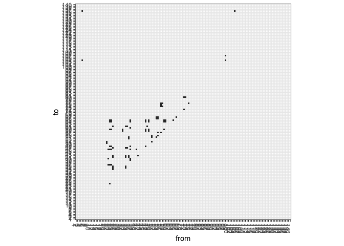
With a lot of nodes, we can’t easily identify the specific connections, but it does give us an idea of how many ties exist in the network. We can look at a matrix plot for just the neighborhoods with edges by directly plugging in sea.edges into the ggplot() function as follows
ggplot(sea.edges, aes(x = from, y = to)) +
geom_raster() +
theme_bw() +
theme(
# Rotate the x-axis lables so they are legible
axis.text.x = element_text(angle = 270, hjust = 0),
# Force the plot into a square aspect ratio
aspect.ratio = 1,
# Hide the legend (optional)
legend.position = "none")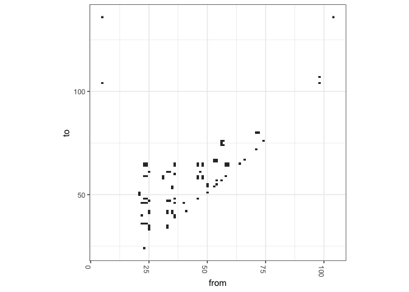
The most common approach to visualizing a network is to graph the network nodes and edges onto a two-dimensional space. The tidy package for graphing networks is ggraph, which is an extension of ggplot2, making it easier to carry over basic ggplot() skills to the creation of network plots.
ggraph(gang.network2) + geom_edge_link() + geom_node_point() + theme_graph()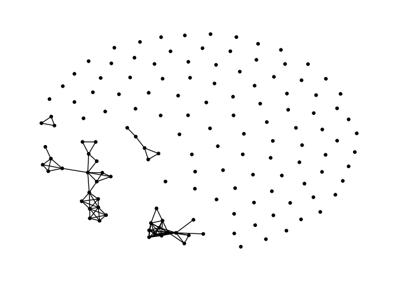
As you can see, the structure of the command ggraph() is similar to that of ggplot() with the separate layers added with the + sign. geom_edge_link() plots the edges and geom_node_point() plots the nodes. And there are arguments within these commands to stylize and alter their graphical features. Network visualizations are cool if you’ve got a small enough data set. Check out the ggraph vignettes to find out how you can improve your graphics.
The plot shows the network including neighborhoods with no connections. Perhaps you want to just examine the linkages between connected nodes. You can save a tidygraph object of just connected nodes using the following set of commands
gang.network.connected <- gang.network2 %>%
# Remove isolated nodes
activate(nodes) %>%
filter(!node_is_isolated())One neat command of tidygraph is activate(), which we used above. Let’s look back at the output for gang.network2
gang.network2## # A tbl_graph: 140 nodes and 90 edges
## #
## # An undirected simple graph with 101 components
## #
## # Node Data: 140 x 2 (active)
## id label
## <dbl> <dbl>
## 1 1 26700
## 2 2 26600
## 3 3 800
## 4 4 700
## 5 5 600
## 6 6 500
## # … with 134 more rows
## #
## # Edge Data: 90 x 2
## from to
## <int> <int>
## 1 5 104
## 2 5 136
## 3 21 50
## # … with 87 more rowsNotice the word “active” in parentheses after the label “Node Data: 140 x 2”. This indicates that the Node part of the network is active. In other words, any manipulation of gang.network2 will be done on the nodes tibble. If we run the following code
activate(gang.network2, edges)## # A tbl_graph: 140 nodes and 90 edges
## #
## # An undirected simple graph with 101 components
## #
## # Edge Data: 90 x 2 (active)
## from to
## <int> <int>
## 1 5 104
## 2 5 136
## 3 21 50
## 4 21 51
## 5 22 36
## 6 22 40
## # … with 84 more rows
## #
## # Node Data: 140 x 2
## id label
## <dbl> <dbl>
## 1 1 26700
## 2 2 26600
## 3 3 800
## # … with 137 more rowsWe find that the edges are now active.
The command node_is_isolated() identifies the nodes that do not have a link and the ! sign indicates not, which means when plugged into filter(), remove nodes that have a TRUE for node_is_isolated(). Graph it using ggraph()
ggraph(gang.network.connected) + geom_edge_link() + geom_node_point() + theme_graph()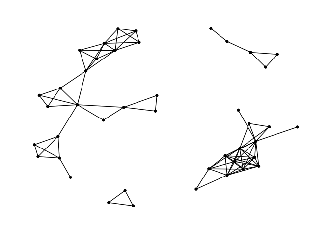
Finally, just like with interactive maps, you can make interactive network graphs. You can do this by using the package visNetwork. First load the package and use the function toVisNetworkData(). The argument idToLabel = FALSE tells R not to use the column id to identify the nodes. It will instead grab the column label
library(visNetwork)
dataVis <- toVisNetworkData(gang.network2,idToLabel = FALSE)You then create the interactive network using the function visNetwork(). Similar to ggraph() you can make this interactive visual prettier.
visNetwork(nodes = dataVis$nodes, edges = dataVis$edges, width = "100%",
main = "Gang Network in Seattle Neighborhoods") %>%
addFontAwesome() %>%
visOptions(highlightNearest = list(enabled = T, hover = T), nodesIdSelection = T) %>%
visInteraction(navigationButtons = TRUE)The widget will allow you to pick a neighborhood and highlight its ego network.
You’ve successfully created a network object and visualized it. Next, let’s get some network-level summary characteristics. First, transitivity, which refers to the extent to which the relation that relates two nodes in a network that are connected by an edge is transitive. Perfect transitivity implies that, if neighborhood 1 is connected (through an edge) to neighborhood 2, and neighborhood 2 is connected to neighborhood 3, then neighborhood 1 is connected to neighborhood 3 as well. Transitivity is used to capture how clustered your network is. We use the function transitivity()
transitivity(gang.network2)## [1] 0.6966825If neighborhood 1 is affiliated with neighborhood 2 and neighborhood 2 is affiliated with neighborhood 3 through a gang turf, then the probability that neighborhood 1 is affiliated with neighborhood 3 through a gang turf is 69.8 percent.
Another important network summary statistic is the diameter, which gives the length (in number of edges) of the longest geodesic path between any two nodes.
diameter(gang.network2)## [1] 6The value 6 means that longest geodesic path to go from one neighborhood to another is 6. We can get this path by using the get_diameter() function
get_diameter(gang.network2)## + 7/140 vertices, from 96550d8:
## [1] 34 25 35 54 57 56 75What do the results tell us?
The mean distance of the shortest paths from one neighborhood to another can be calculated using the function mean_distance()
mean_distance(gang.network2)## [1] 2.468153Note that this value only considers the connected neighborhoods.
Networks often have different clusters or communities of nodes that are more densely connected to each other than to the rest of the network. A component is a measure of a connected sub graph. Components of a graph are sub graphs that are connected within, but disconnected between sub graphs. We can get the number of components in a network by using the function count_components()
count_components(gang.network2)## [1] 101Why so many? Because isolates are included as their own individual network (how lonely!). You can find the number of weak or strong components by using the argument mode = followed by weak or strong in quotes.
There are many other community detection techniques available in the tidygraph and igraph packages, many of them taking on the form group_. For example, type in ? cliques if you want to generate clique and n-clique communities. For some of these community detection methods, it is best to use the connected network if you have a lot of isolates. For example, the group_infomap() function detects 7 separate connected communities
#only for restricted
gang.network.connected %>%
mutate(community = as.factor(group_infomap())) %>%
ggraph(layout = 'kk') +
geom_edge_link(aes(alpha = ..index..), show.legend = FALSE) +
geom_node_point(aes(colour = community), size = 7) +
theme_graph()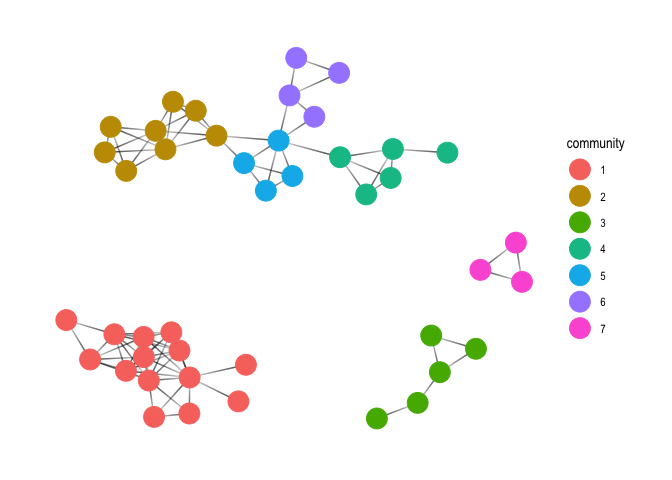
tidygraph has not tidied all the functions available in igraph. For example, to get k-core communities, you’ll use the function coreness() from igraph. The function yields the sub graphs that has at least a degree of k. Let’s save the k-core value back into gang.network2.
gang.network2 <- mutate(gang.network2, kcore = coreness(gang.network2))
Let’s now calculate local measures of the network, specifically attaching values to nodes based on their connectedness or relationships with one another. The most popular node characteristic is centrality. In a nutshell, a measure of centrality is an index that assigns numeric values to the nodes of the network. The higher the value, the more central the node. The definition of centrality is pretty broad. As such, there are several measures of centrality. The tidygraph functions that calculate centrality take on the form centrality_. First, there is degree centrality, which captures the number of relationships (edges) that a node has. Use the function centrality_degree(). Remember, this is a node measure, so make sure the Nodes tibble is active within your network object (we already checked this above)
gang.network2 <- mutate(gang.network2, degree = centrality_degree()) We can then plot degree centrality using our new friend ggraph()
ggraph(gang.network2, layout = 'kk') +
geom_edge_link() +
geom_node_point(aes(size = degree, colour = degree)) +
scale_color_continuous(guide = 'legend') +
theme_graph()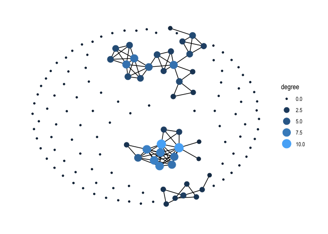
Making nice graphs with large networks that are disconnected is sometimes difficult. If the artist in you is calling out, you can make a nice visual using only nodes that are connected. For example, here is one with labels and a title.
gang.network.connected <- mutate(gang.network.connected, degree = centrality_degree())
ggraph(gang.network.connected, layout = "nicely") +
geom_edge_diagonal(alpha = 0.2) +
geom_node_point(aes(size = degree)) +
scale_color_brewer(palette = "Set1", name = "Type") +
geom_node_text(aes(label = label), size = 2.5, repel = TRUE) +
theme_graph() +
theme(plot.background = element_rect(fill = "#f8f2e4")) +
labs(title = "Gang Centrality in Seattle Neighborhoods",
size = "Degree",
caption = "CRD 298\n Data source: Seattle Police Department")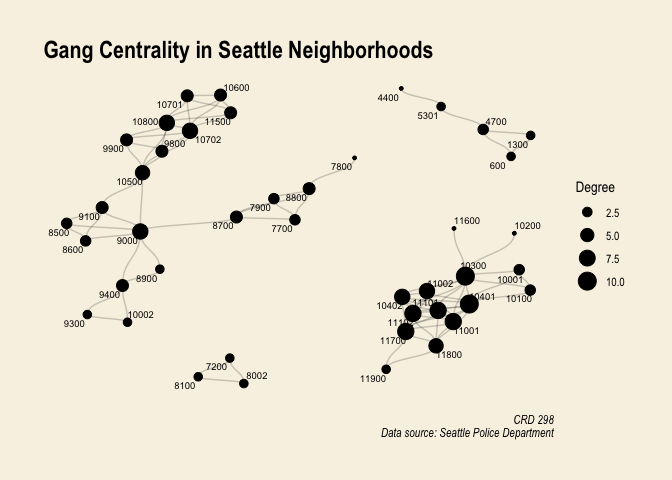
Another measure of centrality is betweenness, which captures the number of shortest paths that go through a node. Use the function centrality_betweenness() with ggraph() to plot node betweenness for our network.
Page rank centrality estimates the probability that information will arrive to a particular node. This algorithm was developed by Google’s founders, and originally applied to website links
gang.network2 %>%
mutate(pagerank = centrality_pagerank()) %>%
ggraph(layout = 'kk') +
geom_edge_link() +
geom_node_point(aes(size = pagerank, colour = pagerank)) +
scale_color_continuous(guide = 'legend') +
theme_graph()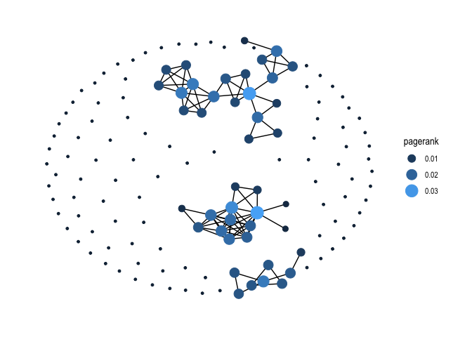
There are other measures of centrality that you can calculate to find out the most influential or connected nodes in your network. Type in ? centrality and you’ll find all the measures possible in the igraph and tidygraph packages.
Social and geographic network models
Let’s now bring “link” the gang social network to the spatial world. One thing we can do is map the node characteristics we calculated above to find where the most influential nodes are physically located. First, let’s take out the node tibble from gang.network2 using the function
as_tibble(). Remember, make sure the node tibble is active.You’ll find that we have the ID we created, the FIPS tract code, the measure of degree centrality, and k-coreness.
Join degree centrality to the spatial object sea.tracts. We’ll join using the FIPS tract code, which we’ll need to turn to numeric in sea.tracts and name it label
We can get summary statistics of tract centrality
And then map it
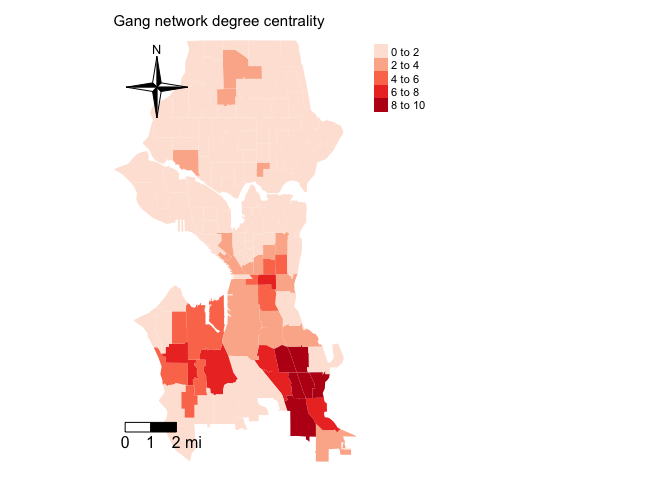
We can also map the k-core communities like in Bastomski et al. (2017). First, the k-core = 2 community showing degree centrality
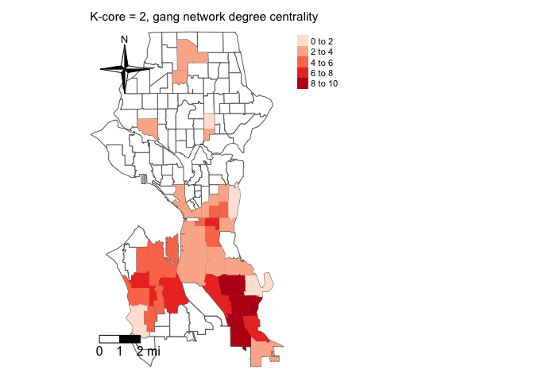
What about kcore = 4?
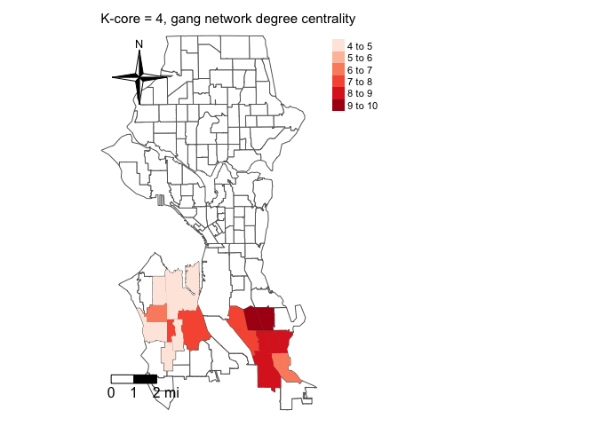
And then the highest k-core = 6
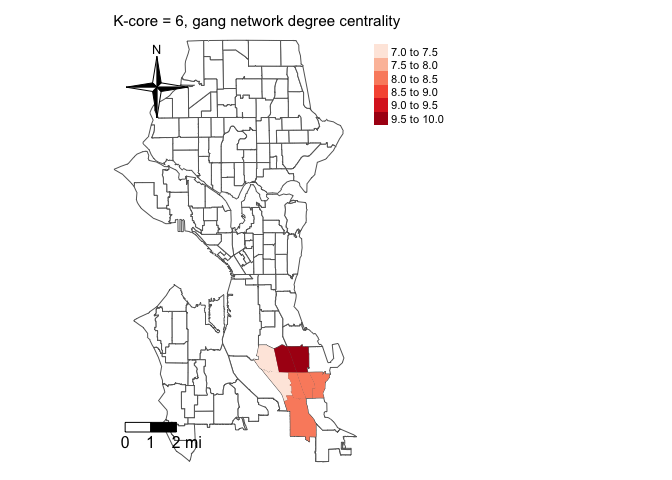
We can calculate whether a network measure is spatially clustered using the Moran’s I. Let’s do that for degree centrality. We’ll need to create an sp object out of sea.tracts and then define a row standardized spatial weights matrix using Queen contiguity.
Then calculate Moran’s I
What is the Moran’s I value tell you about the spatial clustering of gang network degree centrality?
The adjacency matrix can be plugged into a spatial regression framework - rather than a spatial weights matrix, we’re dealing with a social network weights matrix. This means we can apply the methods we’ve been using to measure and model spatial dependency using the gang adjacency matrix. You’ll need to first convert gang.matrix into a row-standardized weights matrix using the function
mat2listw()We can then plot the connections
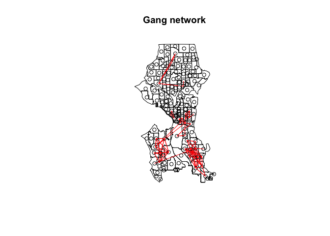
How does this compare to, say, a basic queen contiguity spatial weights matrix?
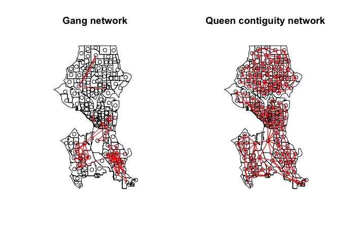
It would be neat to combine
visNetwork()with, say,leaflet()so that you can create an interactive network and map. You can also create a Shiny app to do this. I’m not smart enough to construct this, so I will leave this up to the super coders to handle.You’ve created a weights matrix based on gang turf affiliation. You can then plug this matrix into the spatial regression functions we covered in Labs 6 and 7 to find out whether gang network dependency has an effect on violent crime rates above and beyond neighborhood structural characteristics. For example, use
lagsarlm()to run a social network lag model. You’ll need to add the argumentzero.policy=TRUEbecause of the isolates in the city.You use the same interpretations here as you did for the models we ran in Lab 6, except instead of a spatial diffusion effect, you’re modelling a social network diffusion effect. Remember to use
impacts()to get the direct, indirect and total effects of your variables.You can compare the findings from these models to a spatial dependency model using Queen contiguity. This is the approach that Papachristos and Bastomski (2018) used in their American Journal of Sociology paper examining co-offending networks in Chicago. You’ll also be comparing network and geographic based models in Assignment 4 to explain major building code violations in Philadelphia.
Website created and maintained by Noli Brazil